Graphical posterior predictive checks using the bayesplot package
Jonah Gabry
2017-08-03
This vignette focuses on graphical posterior predictive checks (PPC). Plots of parameter estimates from MCMC draws are covered in the separate vignette Plotting MCMC draws using the bayesplot package, and MCMC diagnostics are covered in Visual MCMC diagnostics using the bayesplot package.
Overview
The bayesplot package provides various plotting functions for graphical posterior predictive checking, that is, creating graphical displays comparing observed data to simulated data from the posterior predictive distribution.
The idea behind posterior predictive checking is simple: if a model is a good fit then we should be able to use it to generate data that looks a lot like the data we observed.
Posterior predictive distribution
To generate the data used for posterior predictive checks (PPCs) we simulate from the posterior predictive distribution The posterior predictive distribution is the distribution of the outcome variable implied by a model after using the observed data \(y\) (a vector of \(N\) outcome values) to update our beliefs about unknown model parameters \(\theta\). The posterior predictive distribution for observation \(\widetilde{y}\) can be written as \[p(\widetilde{y} \,|\, y) = \int p(\widetilde{y} \,|\, \theta) \, p(\theta \,|\, y) \, d\theta.\] Typically we will also condition on \(X\) (a matrix of predictor variables).
For each draw (simulation) \(s = 1, \ldots, S\) of the parameters from the posterior distribution, \(\theta^{(s)} \sim p(\theta \,|\, y)\), we draw an entire vector of \(N\) outcomes \(\widetilde{y}^{(s)}\) from the posterior predictive distribution by simulating from the data model conditional on parameters \(\theta^{(s)}\). The result is an \(S \times N\) matrix of draws \(\widetilde{y}\).
When simulating from the posterior predictive distribution we can use either the same values of the predictors \(X\) that we used when fitting the model or new observations of those predictors. When we use the same values of \(X\) we denote the resulting simulations by \(y^{rep}\), as they can be thought of as replications of the outcome \(y\) rather than predictions for future observations (\(\widetilde{y}\) using predictors \(\widetilde{X}\)). This corresponds to the notation from Gelman et. al. (2013) and is the notation used throughout the package documentation.
Graphical posterior predictive checks
Using the replicated datasets drawn from the posterior predictive distribution, the functions in the bayesplot package create various graphical displays comparing the observed data \(y\) to the replications. The names of the bayesplot plotting functions for posterior predictive checking all have the prefix ppc_.
To demonstrate some of the various PPCs that can be created with the bayesplot package we’ll use an example of comparing Poisson and Negative binomial regression models from the rstanarm package vignette stan_glm: GLMs for Count Data (Gabry and Goodrich, 2016).
We want to make inferences about the efficacy of a certain pest management system at reducing the number of roaches in urban apartments. […] The regression predictors for the model are the pre-treatment number of roaches
roach1, the treatment indicatortreatment, and a variableseniorindicating whether the apartment is in a building restricted to elderly residents. Because the number of days for which the roach traps were used is not the same for all apartments in the sample, we include it as an exposure […].
First we fit a Poisson regression model with outcome variable y representing the roach count in each apartment at the end of the experiment.
library("rstanarm")
head(roaches) # see help("rstanarm-datasets")
roaches$roach1 <- roaches$roach1 / 100 # pre-treatment number of roaches (in 100s)
fit_poisson <- stan_glm(y ~ roach1 + treatment + senior,
offset = log(exposure2),
family = poisson(link = "log"),
data = roaches,
seed = 1111)print(fit_poisson)stan_glm
family: poisson [log]
formula: y ~ roach1 + treatment + senior
num. obs: 262
------
Estimates:
Median MAD_SD
(Intercept) 3.1 0.0
roach1 0.7 0.0
treatment -0.5 0.0
senior -0.4 0.0
Sample avg. posterior predictive
distribution of y (X = xbar):
Median MAD_SD
mean_PPD 25.7 0.4
------
For info on the priors used see help('prior_summary.stanreg').We’ll also fit the negative binomial model that we’ll compare to the poisson:
fit_nb <- update(fit_poisson, family = "neg_binomial_2")print(fit_nb)stan_glm
family: neg_binomial_2 [log]
formula: y ~ roach1 + treatment + senior
num. obs: 262
------
Estimates:
Median MAD_SD
(Intercept) 2.8 0.2
roach1 1.3 0.2
treatment -0.8 0.2
senior -0.3 0.3
reciprocal_dispersion 0.3 0.0
Sample avg. posterior predictive
distribution of y (X = xbar):
Median MAD_SD
mean_PPD 49.7 30.0
------
For info on the priors used see help('prior_summary.stanreg').In order to use the PPC functions from the bayesplot package we need a matrix of draws from the posterior predictive distribution. Since we fit the models using rstanarm we can use its posterior_predict function:
yrep_poisson <- posterior_predict(fit_poisson, draws = 500)
yrep_nb <- posterior_predict(fit_nb, draws = 500)
dim(yrep_poisson)[1] 500 262dim(yrep_nb)[1] 500 262For each of the yrep matrices, every row is a draw from the posterior predictive distribution, i.e. a vector with one element for each of the data points in y.
Histograms and density estimates
The first PPC we’ll look at is a comparison of the distribution of y and the distributions of some of the simulated datasets (rows) in the yrep matrix.
library("ggplot2")
library("bayesplot")
color_scheme_set("brightblue") # see help("bayesplot-colors")
y <- roaches$y
ppc_dens_overlay(y, yrep_poisson[1:50, ])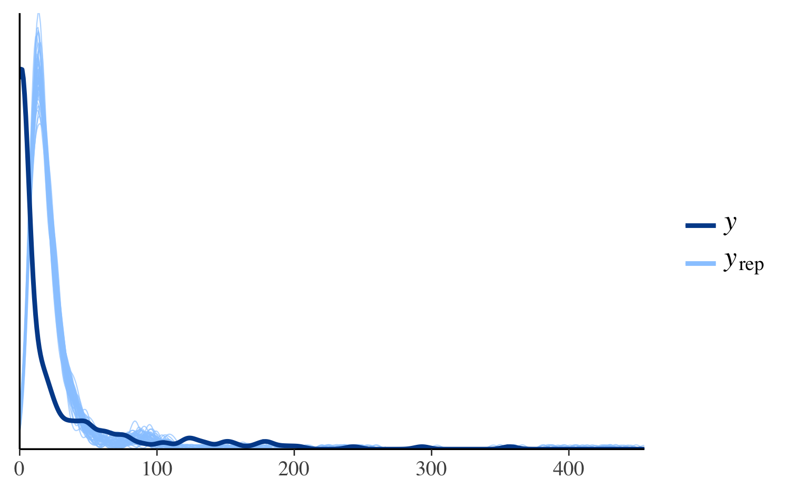
In the plot above, the dark line is the distribution of the observed outcomes y and each of the 50 lighter lines is the kernel density estimate of one of the replications of y from the posterior predictive distribution (i.e., one of the rows in yrep). This plot makes it easy to see that this model fails to account for large proportion of zeros in y. That is, the model predicts fewer zeros than were actually observed.
We could see the same thing by looking at separate histograms of y and some of the yrep datasets using the ppc_hist function:
ppc_hist(y, yrep_poisson[1:5, ])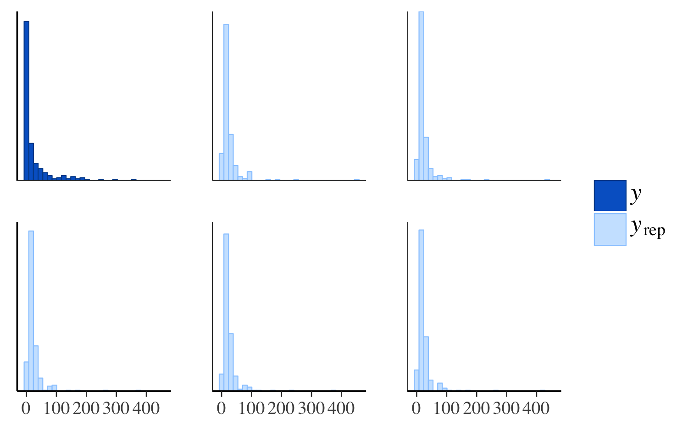
The same plot for the negative binomial model looks much different:
ppc_hist(y, yrep_nb[1:5, ])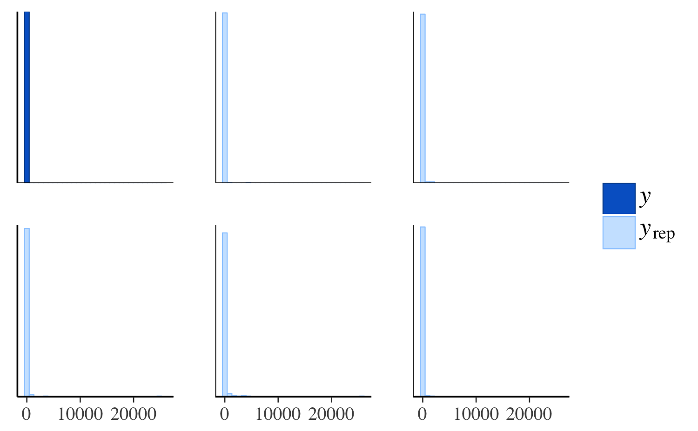
The negative binomial model does better handling the number of zeros in the data, but it occasionally predicts values that are way too large, which is why the x-axes extend to such high values in the plot and make it difficult to read. To see the predictions for the smaller values more clearly we can zoom in:
ppc_hist(y, yrep_nb[1:5, ], binwidth = 20) +
coord_cartesian(xlim = c(-1, 500))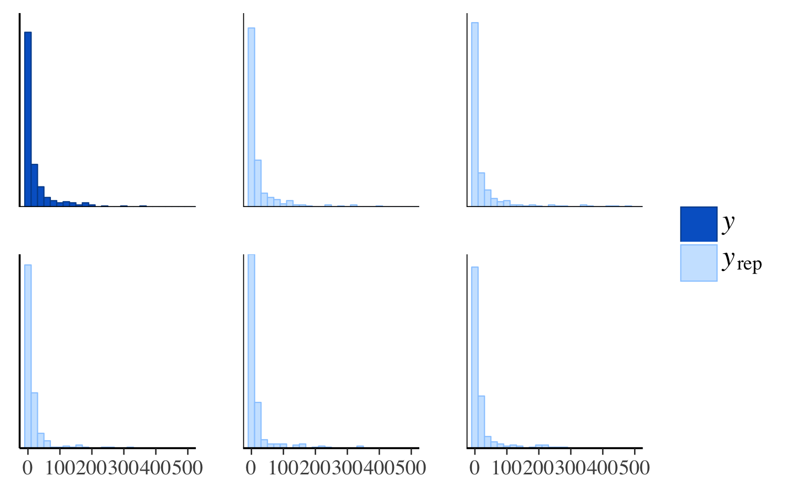
Distributions of test statistics
Another way to see that the Poisson model predicts too few zeros is to use the ppc_stat function to look at the distribution of the proportion of zeros over the replicated datasets from the posterior predictive distribution in yrep and compare to the proportion of observed zeros in y.
First we define a function that takes a vector as input and returns the proportion of zeros:
prop_zero <- function(x) mean(x == 0)
prop_zero(y) # check proportion of zeros in y[1] 0.3587786Then we can use this function as the stat argument to ppc_stat:
ppc_stat(y, yrep_poisson, stat = "prop_zero")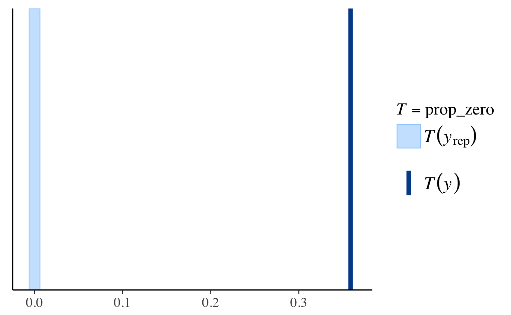
In the plot the dark line is at the value \(T(y)\), i.e. the value of the test statistic computed from the observed \(y\), in this case prop_zero(y). It’s hard to see because almost all the datasets in yrep have no zeros, but the lighter bar is actually a histogram of the the proportion of zeros in each of the replicated datasets.
Here’s the same plot for the negative binomial model:
ppc_stat(y, yrep_nb, stat = "prop_zero")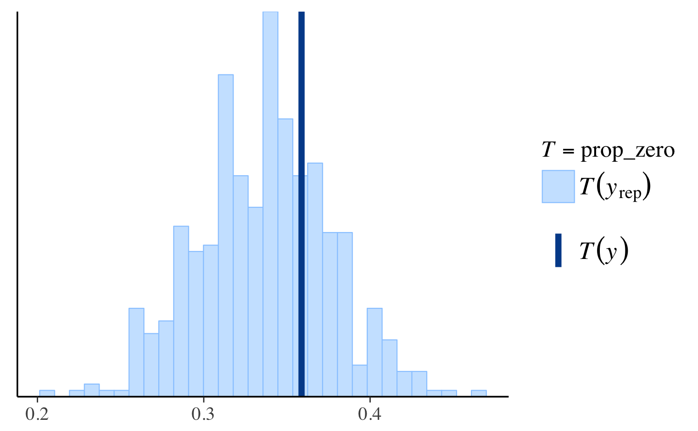
Again we see that the negative binomial model does a much better job predicting the proportion of observed zeros than the Poisson.
However, if we look instead at the distribution of the maximum value in the replications then we can see that the Poisson model makes more realistic predictions than the negative binomial:
ppc_stat(y, yrep_poisson, stat = "max")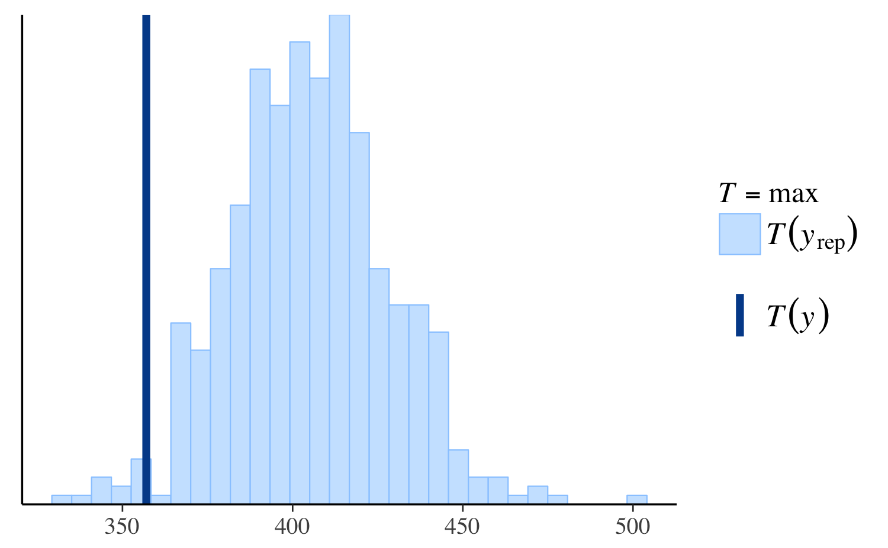
ppc_stat(y, yrep_nb, stat = "max")
ppc_stat(y, yrep_nb, stat = "max", binwidth = 100) +
coord_cartesian(xlim = c(-1, 5000))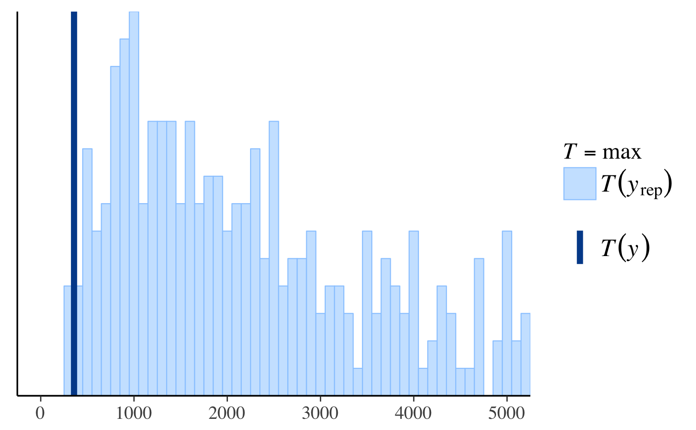
Other PPCs and PPCs by group
There are many additional PPCs available, including plots of predictive intervals, distributions of predictive errors, and more. For links to the documentation for all of the various PPC plots see help("PPC-overview"). The available_ppc function can also be used to list the names of all PPC plotting functions:
bayesplot PPC module:
ppc_bars
ppc_bars_grouped
ppc_boxplot
ppc_dens
ppc_dens_overlay
ppc_ecdf_overlay
ppc_error_binned
ppc_error_hist
ppc_error_hist_grouped
ppc_error_scatter
ppc_error_scatter_avg
ppc_error_scatter_avg_vs_x
ppc_freqpoly
ppc_freqpoly_grouped
ppc_hist
ppc_intervals
ppc_intervals_grouped
ppc_loo_intervals
ppc_loo_pit
ppc_loo_ribbon
ppc_ribbon
ppc_ribbon_grouped
ppc_rootogram
ppc_scatter
ppc_scatter_avg
ppc_scatter_avg_grouped
ppc_stat
ppc_stat_2d
ppc_stat_freqpoly_grouped
ppc_stat_grouped
ppc_violin_groupedMany of the available PPCs can also be carried out within levels of a grouping variable. Any function for PPCs by group will have a name ending in _grouped and will accept an additional argument group. For example, ppc_stat_grouped is the same as ppc_stat except that the test statistics are computed within levels of the grouping variable and a separate plot is made for each level:
ppc_stat_grouped(y, yrep_nb, group = roaches$treatment, stat = "prop_zero")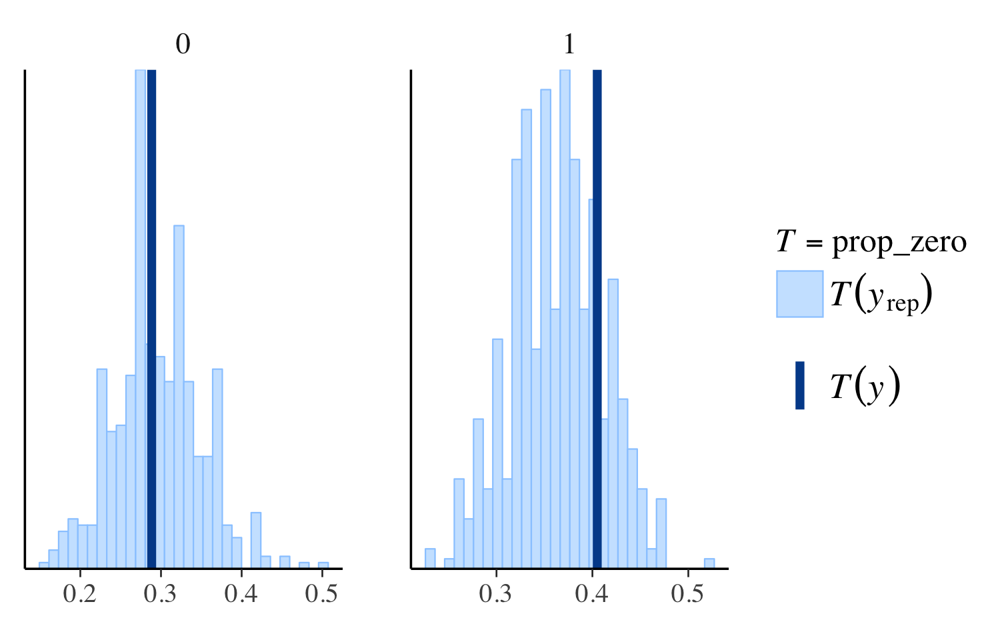
The full list of currently available _grouped functions is:
available_ppc(pattern = "_grouped")bayesplot PPC module:
(matching pattern '_grouped')
ppc_bars_grouped
ppc_error_hist_grouped
ppc_freqpoly_grouped
ppc_intervals_grouped
ppc_ribbon_grouped
ppc_scatter_avg_grouped
ppc_stat_freqpoly_grouped
ppc_stat_grouped
ppc_violin_groupedProviding an interface to bayesplot PPCs from another package
The bayesplot package provides the S3 generic function pp_check. Authors of R packages for Bayesian inference are encouraged to define methods for the fitted model objects created by their packages. This will hopefully be convenient for both users and developers and contribute to the use of the same naming conventions across many of the R packages for Bayesian data analysis.
To provide an interface to bayesplot from your package, you can very easily define a pp_check method (or multiple pp_check methods) for the fitted model objects created by your package. All a pp_check method needs to do is provide the y vector and yrep matrix arguments to the various plotting functions included in bayesplot.
Defining a pp_check method
Here is an example for how to define a simple pp_check method in a package that creates fitted model objects of class "foo". We will define a method pp_check.foo that extracts the data y and the draws from the posterior predictive distribution yrep from an object of class "foo" and then calls one of the plotting functions from bayesplot.
Suppose that objects of class "foo" are lists with named components, two of which are y and yrep. Here’s a simple method pp_check.foo that offers the user the option of two different plots:
pp_check.foo <- function(object, ..., type = c("multiple", "overlaid")) {
y <- object[["y"]]
yrep <- object[["yrep"]]
switch(
match.arg(type),
multiple = ppc_hist(y, yrep[1:min(8, nrow(yrep)),, drop = FALSE]),
overlaid = ppc_dens_overlay(y, yrep)
)
}To try out pp_check.foo we can just make a list with y and yrep components and give it class foo:
x <- list(y = rnorm(50), yrep = matrix(rnorm(5000), nrow = 100, ncol = 50))
class(x) <- "foo"pp_check(x)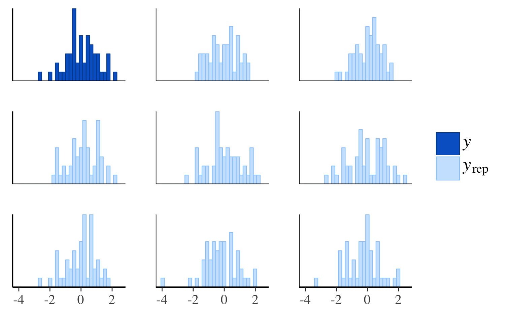
pp_check(x, type = "overlaid")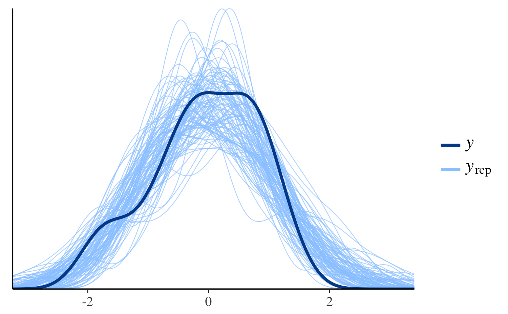
References
Buerkner, P. (2018). brms: Bayesian Regression Models using Stan. R package version 1.4.0. https://CRAN.R-project.org/package=brms
Gabry, J., and Goodrich, B. (2017). rstanarm: Bayesian Applied Regression Modeling via Stan. R package version 2.14.1. http://mc-stan.org/interfaces/rstanarm.html, https://CRAN.R-project.org/package=rstanarm
Gelman, A., Carlin, J. B., Stern, H. S., Dunson, D. B., Vehtari, A., and Rubin, D. B. (2013). Bayesian Data Analysis. Chapman & Hall/CRC Press, London, third edition.
Stan Development Team. (2016). Stan Modeling Language Users Guide and Reference Manual. http://mc-stan.org/documentation/